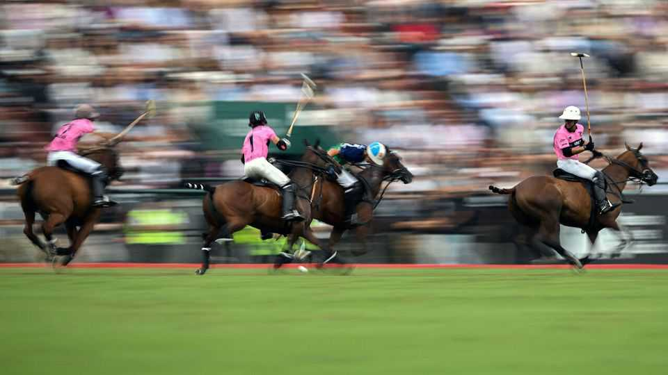

Polo’s lessons for Argentina
Why the South American country dominates the sport

Aug 20th 2026
“Twenty five years ago I came here for the first time,” says Maximiliano Fernández. “There was nothing.” Now the area between the towns of Pilar and General Rodríguez, a strip of land 50km west of Buenos Aires, is packed with polo clubs, stables and estates. Every scrap of farmland is being bought up and transformed into pristine polo fields. Argentina’s polo world is “a bubble” within the country, says Mr Fernández, who manages a team: it has its own economy. And that economy is world-beating.
Polo—hockey on horseback—is purportedly the world’s oldest team sport. An early version was played in Persia in the sixth century BC. The modern game was formalised by British officers in India and then galloped around the empire. It became a sport of kings, taken up by elites in Europe, the United States and more recently the Gulf states. Yet Argentina came to dominate the global scene, even as the rest of its economy was in a shambles.
Like any fledgling industry, it helps to have the raw materials. Horses had long thrived on the Pampas, central Argentina’s vast grasslands. They attracted gauchos, the local version of cowboys. Polo, when it arrived, fit naturally with the abundance of cheap horses, skilled riders, flat land and agreeable weather. Argentine players were soon reckoned the world’s best, and remain so: 27 of the top 30 professionals today are from the country. They sustain a service-based economy in which rich foreigners hire them to help win trophies.
Industry soon followed. Landed Argentine families have built formidable breeding programmes which pump out the world’s finest polo horses (or ponies, as they are known). And these products lead the field: of the 1,140 horses that competed for the Queen’s Cup in Britain last year, 1,000 were of Argentine bloodlines, according to the country’s polo association.
By maximising its competitive advantage in human—and equine—capital, Argentina’s polo economy has enjoyed an export-led boom. Between January and November last year Argentina shipped 2,900 horses (three-quarters of them polo ponies) to 38 countries. The country is the world’s leading exporter.
To keep their noses ahead, Argentine breeders and businessmen have invested in R&D and pioneered the cloning of ponies. A breakthrough came in 2010, when a clone of Dolfina Cuartetera, ranked the best pony in Argentina’s Hall of Fame, sold for a record $800,000. Now many are copies of past Argentine greats. Some breeders are attempting to trot a step further in order to protect their intellectual property, selling only the foals of clones, rather than the clones themselves.
Regulators have enabled the innovation: the polo association has resisted red tape and embraced technology even as thoroughbred horse-racing has prohibited it. But there is a limit. When Kheiron, an Argentine biotech company, unveiled the world’s first gene-edited horses in 2024, they were barred from competition. After all, such tech could one day enable rivals abroad to engineer horses that outrun even Argentina’s famed bloodlines.
At the same time as Argentina’s economy bucks and rears (shrinking by 2.5% in February, growing by 2.8% in March then contracting by 1.5% in April), the polo world seems unbothered. That is thanks, in part, to a steady flow of foreign direct investment. Rich foreigners, known as patrons, bring money aplenty into Argentina’s polo bubble. They buy land, hire players and haggle over horses, creating a trickle-down economy for grooms, farriers, trainers, vets and architects.
Sustained growth has been the result. Two decades ago Juan Martín Batistuta, an equine vet, worked almost entirely on racehorses; today he works almost entirely on ponies. “I’ve never been busier,” he says. Nor is the boom confined to Buenos Aires. “From Córdoba to Patagonia, all over Argentina you have so many more clubs,” says Mr Fernández. The country now has 177. The sport’s profile is rising globally, too. A Netflix documentary released in 2024 and a broadcasting deal with ESPN have brought it to new audiences.
The approval ratings of Javier Milei, Argentina’s president and a polo fan, are suffering as he attempts to reset the country’s economy. He might glance at proceedings in Pilar: a world-beating industry making the most of its competitive advantage, attracting foreign investment and adopting new technologies to bolster its position as the world’s leading exporter. An ideal remedy, perhaps, for a long face. ■